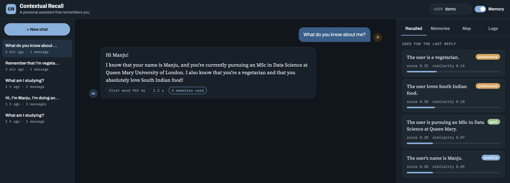
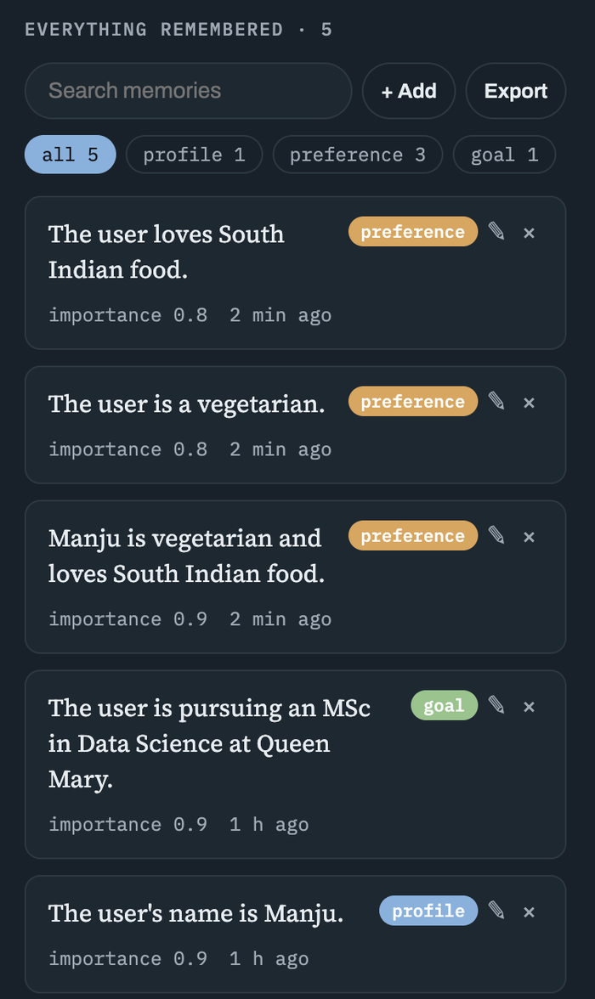
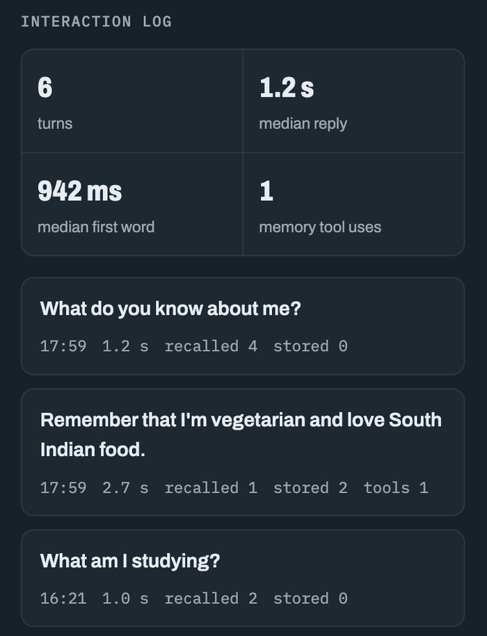
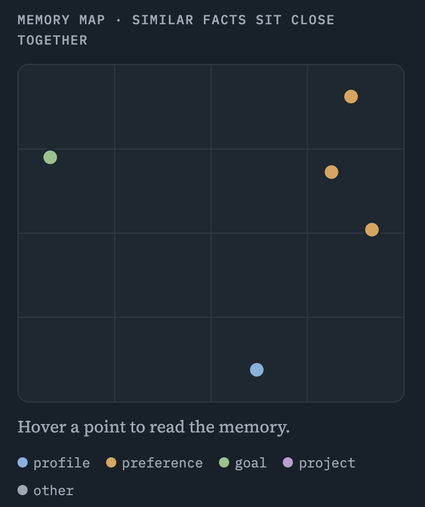
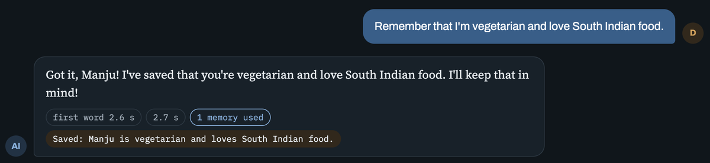

LangGraph · Chroma DB · FastAPI · Gemini 3.5 Flash Lite
Contextual Recall
Most chatbots forget you when a conversation ends, or drag the whole history into every prompt. Can an assistant keep only what matters about you, bring it back at the right moment, and show that it helps?
Manju Swaroop V2026
Share of 20 questions answered correctly in a brand-new chat, using facts told in an earlier one. 8 personas, Gemini 3.5 Flash Lite, local MiniLM embeddings.
+90percentage points of continuity from long-term memory
0.94 saverage reply, including the model call
74 msmedian time to recall memories
37offline tests, run on every push
The problem
Forgetting and over-remembering both fail
Send nothing from before
The model has no memory of its own. Start a new chat and it no longer knows your name, your course or that you don't eat meat.
Send everything every time
Prompts grow with every message. Replies get slower and more expensive, and the facts that matter are buried among small talk.
This assistant keeps two kinds of memory. Durable facts about you live in a vector database and come back only when they're relevant. The current conversation is kept short with a running summary.
The assistant
Memory you can see and change
A new chat with no history. Asked "What do you know about me?", the assistant pulls four facts from earlier conversations, and the panel on the right shows each one with its score.

Saved chats on the left, a streamed reply in the middle, the memories used on the right.
Method
What happens to one message
Step 1 · Recall
Search by meaning
The message is embedded with all-MiniLM-L6-v2 and Chroma DB returns this user's closest facts. Other users' memories are filtered out.
Step 2 · Rank
Keep the best five
Fifteen candidates are re-scored by similarity, importance and recency. Anything under 0.25 is dropped.
Step 3 · Respond
Answer with context
The prompt holds the rules, the chosen facts, the running summary and the recent messages. The reply streams to the browser word by word.
Step 4 · Tools
Act when asked
"Remember that…" or "forget…" makes the model call save_memory, search_memory or forget_memory, at most three rounds per message.
Step 5 · Summarise
Keep the chat small
At 16 messages, the oldest are folded into a summary and the chat is trimmed back to about 8, never splitting a tool call from its result.
Step 6 · Remember
Save in the background
After the reply, the model extracts durable facts as JSON. Near-duplicates (cosine ≥ 0.92) update the old fact instead of adding a new one.
Ranking
Relevance first, then importance and age
Chroma ranks only by similarity. A fact that matters more, like your name, can sit a little lower than a passing remark, so every candidate is re-scored.
Similarity carries most of the weight. Importance and recency break ties, and recency halves every 30 days, so old facts fade gently rather than disappearing.
15
candidates fetched, three times the five kept
0.25
minimum score to reach the prompt
0.92
cosine similarity at which a new fact replaces an old one
Start from one of the four memories in the screenshot above, or move the sliders. The page uses the same formula and threshold as the assistant.
Score
0.33
Similarities look low because these are short sentences compared with a short question. What matters is the order: the five highest scores above 0.25 go into the prompt.
Findings
What the evaluation showed
Memory is what makes the difference
100%vs 10% without
Each persona told the assistant a few facts in one chat. Then, in a brand-new chat, it was asked questions that needed those facts, once with memory on and once with it off. With memory it answered all 20. Without it, 2 generic answers happened to contain an expected keyword.
8
personas, from a nurse in Leeds to a coffee-shop owner who renamed his shop
20
questions, each asked in a fresh chat
0
failed questions with memory on

Everything remembered, by category. Each fact can be edited or deleted.
Replies stay under a second
0.94 smean reply
The whole turn, including the round trip to Gemini, averages under a second, and half of replies arrive within 768 ms. Streaming makes it feel faster again: in the app the first words appear before the reply is finished.
768 ms
median reply with memory
2.28 s
95th percentile with memory
865 ms
mean reply without memory

The interaction log tracks every turn's timing, recall and tool use.
Metric
With memory
Without memory
Continuity, questions answered from earlier chats
100% (20 / 20)
10% (2 / 20)
Mean reply time
941 ms
865 ms
Median reply time
768 ms
n/a
95th-percentile reply time
2,278 ms
1,658 ms
Recall step on its own
median 74 ms · mean 150 ms
n/a
One run on a MacBook Air, Gemini 3.5 Flash Lite free tier, local all-MiniLM-L6-v2 embeddings, 5 seconds between model calls to stay inside rate limits.
Recall costs very little
74 msmedian recall
Turns with memory took about 77 ms longer on average. Embedding the question and searching Chroma DB both run locally, so nearly all of each reply's time is the model. The memory map shows why recall works: facts with similar meaning sit together.
384
numbers per sentence in each embedding
150 ms
mean recall; the first searches warm up caches

A 2-D projection of the embeddings. The three food preferences cluster together.
The assistant manages its own memory
3memory tools
Background extraction catches facts said in passing. Tools handle the rest: asked to remember, it saves the fact and says so under the reply; asked to forget, it searches for the memory, then deletes it.
user id
comes from the server, so a tool can only touch the current user's memories
3 rounds
of tool calls at most, then it has to answer

A "Saved" tag shows the tool call, next to the time to first word and the total time.
The check that matters
A baseline, and a small test set
Without the memory-off run, 100% could mean the model was guessing well. The same questions with memory switched off scored 10%, so the difference comes from memory. The test set is small, though: 20 questions, one run, scored by keyword matching, measured before the memory tools and streaming were added. It shows the method works, not that it would score 100% on any conversation.
Engineering
What broke, and what fixed it
Problem
What happened
Fix
Free-tier limits
Gemini 3.8 Flash allowed 5 requests a minute and 20 a day; one reply took 88 seconds while the app waited and retried
Moved to Gemini 3.5 Flash Lite (15 a minute, 500 a day) and added a delay option to the evaluation
Busy model
"503 high demand" and dropped connections
Retries with exponential backoff and jitter; a clear "model is busy" message instead of a server error
Reply format
Gemini 3 returns a list of content blocks, which showed up raw in the chat
A helper that keeps only the text parts
Python version
numpy and LangGraph wouldn't install on Python 3.15
Rebuilt the environment on Python 3.12
Saving twice
"Remember that…" was saved by the tool and again, split into two facts, by background extraction
Skip background extraction when the model already saved that turn
Tool calls in summaries
Trimming old messages could leave a tool result without its call, which chat APIs reject
The cut always lands on a user message
Limits and next steps
What this can't tell you yet
A small evaluation
20 questions and one run: a single wrong answer moves continuity by five points. Five runs and more personas would steady the numbers.
Keyword scoring
A reply can mention the keyword for the wrong reason. A second model acting as a judge would catch that.
Tools aren't evaluated
The test set covers recall, not "remember" and "forget". Those need their own cases.
One machine
No sign-in, and chats and logs live in SQLite files. Several users would need authentication and Postgres.
About
About Contextual Recall
Contextual Recall was built by Manju Swaroop V to learn how assistants decide what to remember, find it again at the right moment, and measure whether memory helps. The repository includes the full code, a project report and a step-by-step guide to how it works.